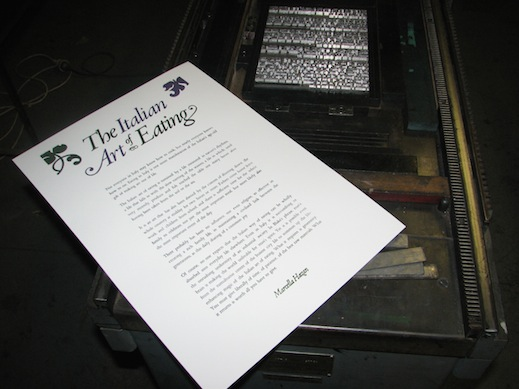

Inking by hand has added to the effect that no two posters are alike. Being handmade, none of them is perfect, but they are all quite unique.
Using modern techniques and making a plate for the entire image would, no-doubt, produce a far superior result – and can be done with letterpress style de-bossing – but that wasn’t the point. I could have spent an eternity adjusting the spacing, fiddling with the alignment, but once a decision is set in metal, the effort required for change is significant. So I’ve finished the project with a better understanding of the skills that once were common in the print industry. Designers have it easy these days!
I’ve worked many years at the computer end of the modern print industry and I am aware that different skills evolve as the technology does. It wasn’t long ago that I was editing the PostScript code of an illustration just to get it output properly on a Linotronic imagesetter. Nobody does that anymore, just 15yrs later. The tools we have today offer artists phenomenal options for creativity. Whereas, traditionally, they would have been hampered by limitations in production equipment, they are now able to create designs that previous typographers could only dream of. But a quick click with the mouse or swipe on the screen is no substitute for truly understanding the processes involved in creating the finished work. As Marcella reminds us – we don’t want to let man’s brain make the world unlivable for man’s spirit.
Many thanks to Anthony, James, and Michael.